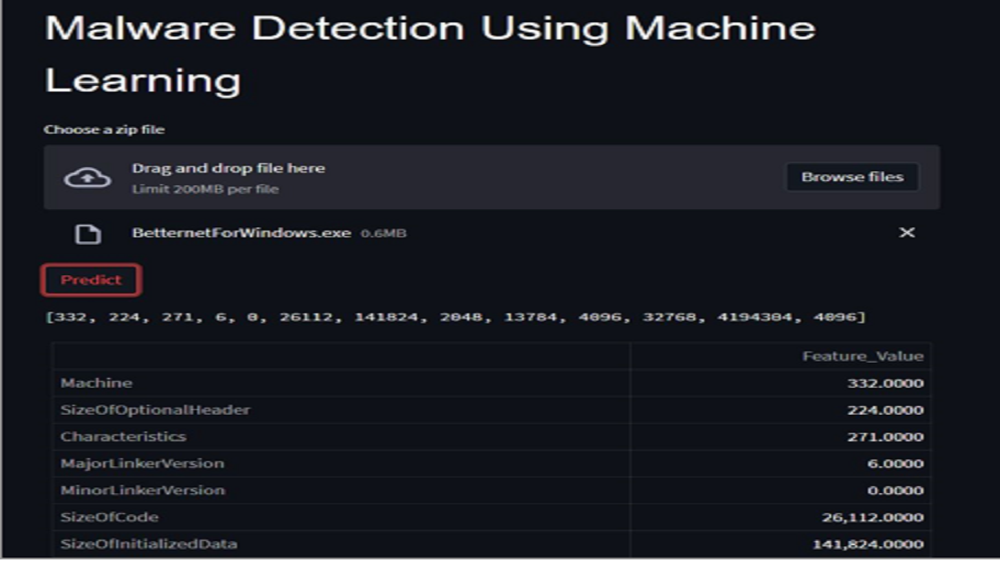

Malware Analysis using Machine learning
Desciption
The Malware Detection project commences by leveraging the capabilities of the pefile Python package, which facilitates the parsing and analysis of PE files. PE files are executable files commonly found in Windows applications, containing crucial information about the software's structure and behavior. By extracting relevant features from these files, such as imported functions, sections, and header information, a comprehensive dataset is created for training and evaluating the machine learning models.
The primary machine learning model employed in this project is the Random Forest algorithm. Random Forest is an ensemble learning method that combines multiple decision trees to make predictions. Each decision tree is trained on a subset of the dataset and independently provides predictions. The final prediction is obtained by aggregating the predictions of all individual trees. Random Forest is known for its ability to handle high-dimensional data, mitigate overfitting, and yield high accuracy. In the context of this project, the Random Forest model achieves an impressive accuracy of 97% in classifying malware samples.
To evaluate the performance of alternative machine learning models, four additional algorithms are trained and evaluated: Support Vector Machines (SVM), Decision Trees, Logistic Regression, and Streamlit. Each model is trained on the dataset and assessed using various metrics, including accuracy, precision, recall, and F1 score. This evaluation process facilitates a comparative analysis of the models' effectiveness in detecting malware and aids in identifying the most suitable algorithm for the task at hand.
Key Features
- Dataset Preparation: The project utilizes the pefile Python package to parse and analyze Portable Executable (PE) files commonly associated with Windows applications. By extracting relevant features from the PE files, such as imported functions, sections, and header information, a robust dataset is created for training and testing the machine learning models
- Random Forest Model: The primary model employed in this project is the Random Forest algorithm. Random Forest is an ensemble learning method that combines multiple decision trees to achieve improved accuracy and prevent overfitting. With an impressive accuracy rate of 97%, the Random Forest model is selected as the best model for classifying malware samples.
- Model Evaluation: In addition to the Random Forest model, four other machine learning models are trained and evaluated: Support Vector Machines (SVM), Decision Trees, Logistic Regression, and Streamlit. Evaluation metrics including accuracy, precision, recall, and F1 score are used to assess the performance of each model, providing insights into their effectiveness in malware detection.
- Streamlit Web Application: To create a user-friendly interface, the project utilizes the Streamlit library. Streamlit is a Python framework for building interactive web applications. It enables users to upload PE files and receive real-time predictions on whether the file contains malware. The Streamlit-based front-end enhances user experience and facilitates efficient scanning of files for potential threats.